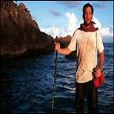

Реж. Роберт Земекис, США, 2000
В ролях: Том Хэнкс, Хелен Хант
Название его перевели как «Робинзон». Ни хера это не «Робинзон». Вполне возможно, что американцы даже и не имели в виду Крузо, вполне возможно, что имели они в виду Кастра (типа «CASTRA GO WAY»): бородатый тип на острове, но ни хера не Свободы (тонкий подтекст).
В общем фильм этот (сюжетная линия которого следующая: в центре заснеженной, переживающей перемены современной Москвы, на Красной Площади находится склад американской курьерской фирмы, один из руководителей которой в следствии авиакатастрофы оказывается на необитаемом острове и вынужден четыре года лечить себе зубы коньками и любить Винсона — баскетбольный мяч; тем временем его жена выходит замуж за другого, Винсон тонет, главный герой заводит себе нового Винсона и доставляет по назначению последнюю посылку, в которой (суки-падлы) так и не известно, что оказалось, по месту назначения) заслуживает вашего пристального внимания, и если вы считаете, что он говно, следует поменять тоочку зрения на вот такую: это отличный фильм. Потому, что Земекес отличный режиссер, Том Хенкс — отличный актер, а я какого-то хрена купил эту кассету. Столько людей не могут облажаться одновременно. Ведь же правда?